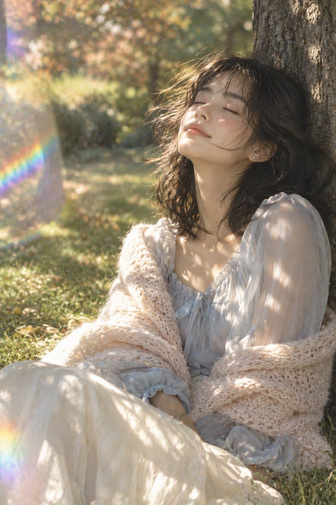

Dreamy soft-focus lifestyle portrait
MOO-017Moodunspecifiedby Tanvir (@Tanvir48992)2026-10-01

Hazy, soft-focus lifestyle portrait with wispy bangs, airy light and gentle bloom.
Prompt
Dreamy, soft-focus lifestyle portrait of a young woman with dark, wavy, shoulder-length hair and wispy bangs, leaning back against a tree trunk in a sunlit park, eyes gently closed, face tilted toward the light with a serene, content, barely-there smile. Loose strands of hair are caught mid-breeze, fluttering in the wind. Her skin is fair and luminous with a natural, dewy finish, soft rosy lips, and minimal makeup. A tiny pearl stud earring is just visible. She wears a flowy, sheer powder-blue chiffon blouse with gathered sleeves and a relaxed neckline, layered with a chunky, loosely knit cream-pink mohair shawl draped over her shoulders and arms, and a long, billowy ivory skirt spread across the grass. Dappled sunlight filters through the leaves above, casting soft, scattered leaf-shadow patterns across her face, blouse, and skirt. A faint rainbow-tinted lens flare and prismatic light leak drifts across the left side of the frame, like a soap bubble or glass refraction catching the sun. Setting: a quiet, sun-drenched garden or park in late afternoon, with a rough tree bark on the right edge, lush green grass, and warm autumn-toned foliage melting into creamy, blurred bokeh in the background. Mood: tender, peaceful, nostalgic, romantic, like a warm spring memory or a scene from a Japanese or Korean indie film. Lighting and Camera Soft, warm, golden natural sunlight with gentle backlight and dappled shade, glowing highlights on the skin and hair, airy pastel shadows. Shot on 35mm film, 85mm lens, f/1.8, shallow depth of field, vertical 9:16 composition, medium close-up from head to waist, subtle film grain, slightly faded, low-contrast, dreamy pastel color grade with soft halation and light leaks. Color Palette Powder blue, cream, blush peach, sage green, warm honey gold, soft charcoal-black hair. Style Keywords dreamy portrait, film photography, Kodak Portra 400, soft focus, dappled light, light leak, lens flare, prismatic rainbow refraction, cottagecore, Japanese film aesthetic, Korean indie mood, serene, nostalgic, pastel tones, natural beauty, tree shade, windblown hair, photorealistic, hyper-detailed Negative Prompt harsh flash, oversaturated, high contrast, plastic skin, airbrushed, over-smoothed, heavy makeup, open eyes, blurry face, low resolution, extra fingers, deformed hands, cartoon, 3D render, anime, watermark, text, cluttered background
Our Seedance 2.5 adaptation
[ADAPTED for Seedance 2.5 by Grok Bot; not the creator's prompt. Follows the official BytePlus Seedance 2.5 prompt guide: asset binding → one-sentence summary → integer-second timeline → consistency notes → negatives.] API: duration 8, ratio 4:5 (use 3:4), resolution 1080p, generate_audio true. Assets: Image 1 is the woman (identity lock). Image 2 is the outfit: sheer powder-blue blouse, cream-pink mohair shawl, ivory skirt. Summary: An 8-second dreamy, soft-focus lifestyle portrait. The woman from Image 1 leans back against a tree in a sunlit park, eyes closed, face tilted to the light. 0-3s: Medium close-up with a slow push-in. Dappled leaf shadows drift across her face and blouse, and loose strands flutter in the breeze. 3-6s: A faint rainbow-tinted lens flare blooms as the sun peeks through the leaves, and her barely-there smile deepens. 6-8s: She opens her eyes slowly and looks up into the canopy. Hold. Look: soft-focus diffusion, dewy luminous skin, pastel grade, prismatic flare, shallow depth of field. Audio: birdsong, leaves rustling, distant children playing. No BGM. No subtitles.
Tags: dreamy, soft focus, airy